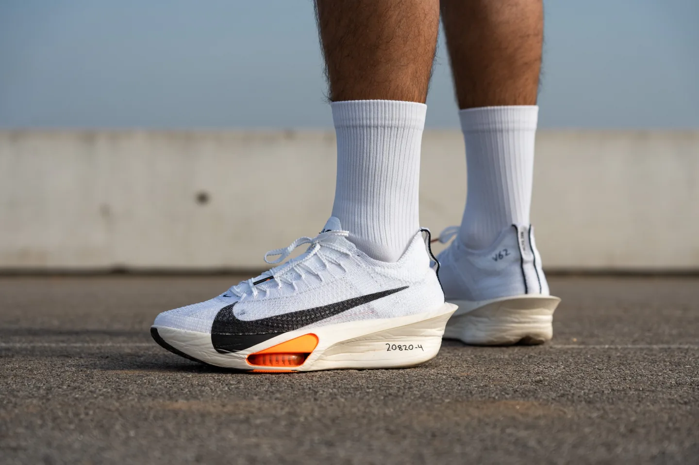
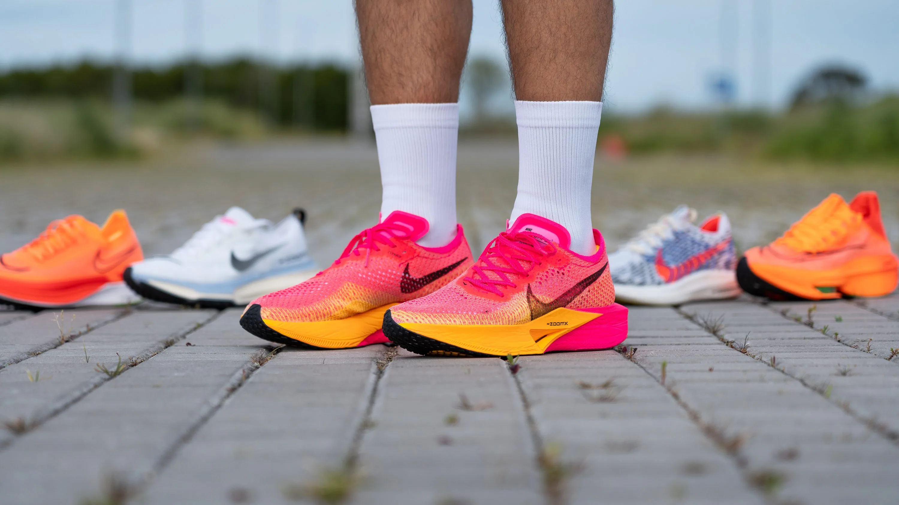
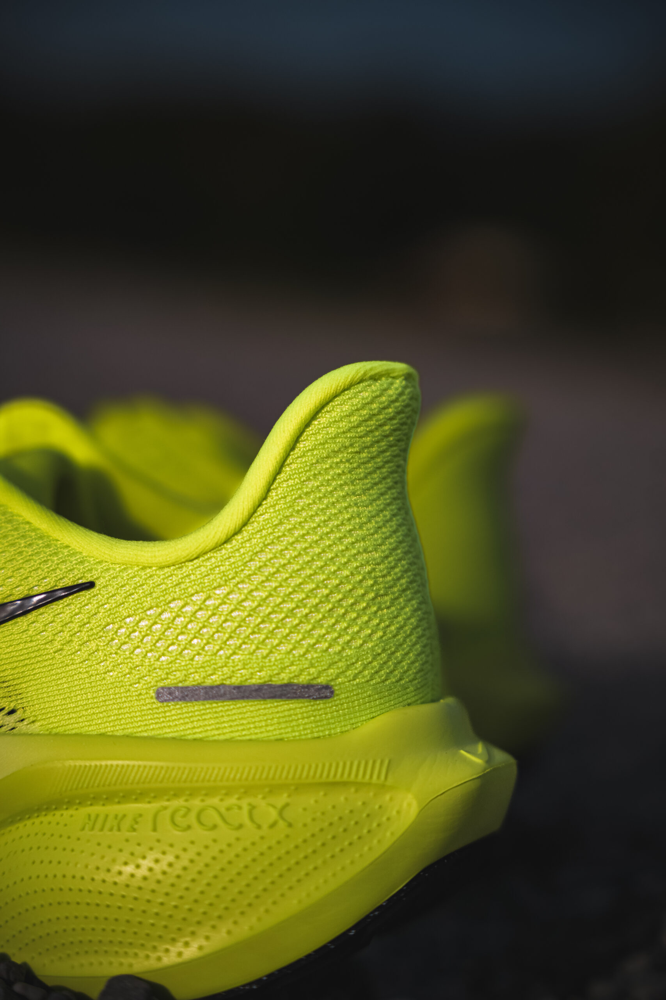
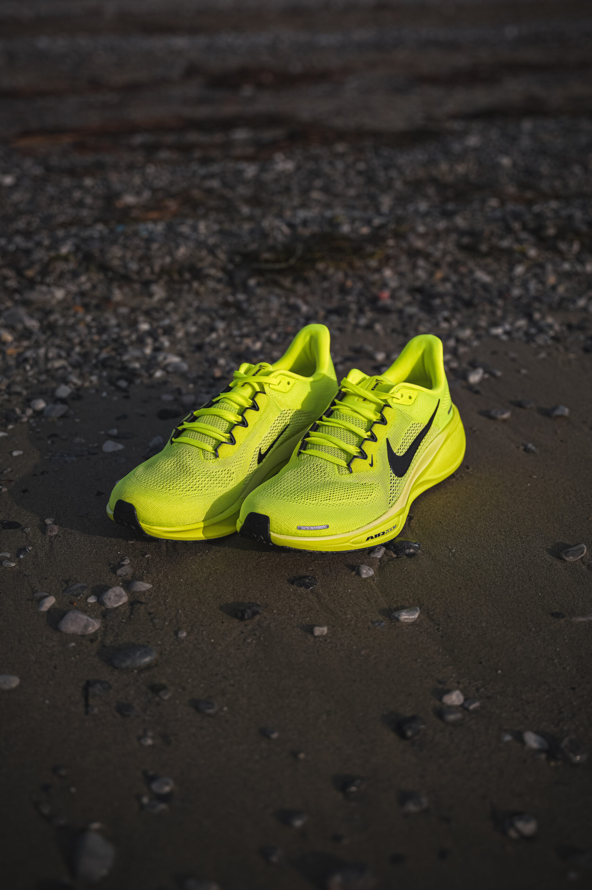
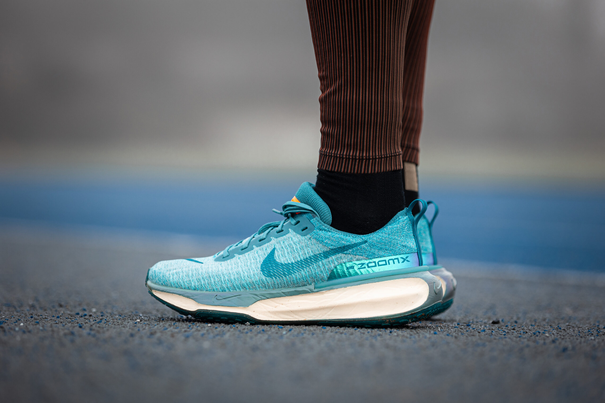
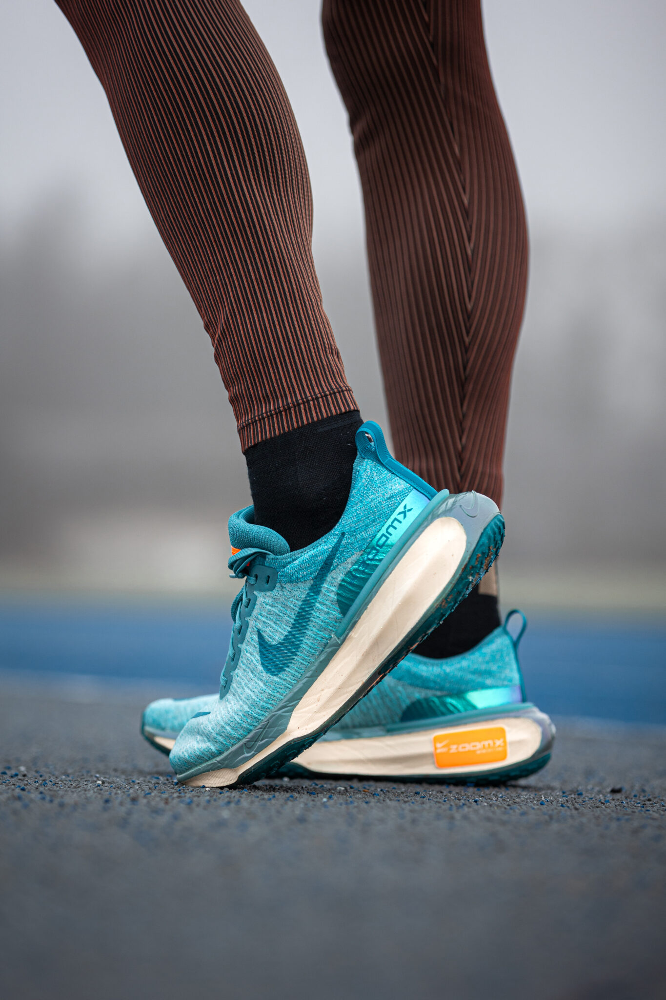

Finding the right running shoe isn’t just about comfort, it’s key to performance and injury prevention. Join Otwiine Jatel Olweny, better known as OJO, as he shares his top picks for the best Nike running shoes of 2025.
Zoom Fly 6 - The Race Day Rocket


The Zoom Fly 6 is hands down my go-to for race day. The carbon-infused plate gives every stride that spring-loaded feel, especially during tempo runs and intervals. The cushioning is soft but responsive — it protects your legs while still letting you fly. I tested it over a 10K and a half marathon prep session, and it really came alive at fast paces.
One thing to note: it’s not the most stable shoe on sharp turns or uneven terrain, but if you're chasing PBs on the road, the Zoom Fly 6 delivers that fast, aggressive feel.
Want to grab yourself a pair? Head to Nike.com to see all their sizes and colors.
Pegasus 41 – The Reliable Daily Trainer



If I had to pick just one shoe for everything, it would be the Pegasus 41. Nike improved the midsole with ReactX foam this year, and you can feel the difference — it’s softer, bouncier, and more forgiving on recovery days. I’ve used it for easy runs, strides, and even a long 15K, and it handled it all like a champ.
The fit is true to size with great lockdown, and the upper breathes well even in Uganda’s heat. It’s not flashy like the Zoom Fly, but it’s that consistent, dependable partner every runner needs.
Want to grab yourself a pair? Head to Nike.com to see all their sizes and colors.
Nike Invincible 3 – The Cushioned Beast


I wasn’t sure about the Invincible 3 at first — it looked bulky. But once I started using it for recovery runs and long, slow days, I got it. This shoe is pure comfort. The ZoomX foam gives that sink-in, trampoline feel that’s gentle on tired legs.
It’s not made for speed, but when you just need to log miles and protect your joints, this is the one. I especially reach for it after tough track sessions or long runs in the Zoom Fly.
Want to grab yourself a pair? Head to Nike.com to see all their sizes and colors.
After testing all three shoes, it’s clear that each one serves a unique purpose in a runner’s rotation. The Zoom Fly 6 is built for speed and shines on race day with its snappy, propulsive feel. The Pegasus 41 stands out as a reliable daily trainer — versatile, durable, and comfortable enough for any type of run. And when recovery is the goal, the Invincible 3 delivers unmatched cushioning that helps your legs bounce back. Whether you're chasing a new PB or logging base miles, there's a Nike shoe here that fits the moment.